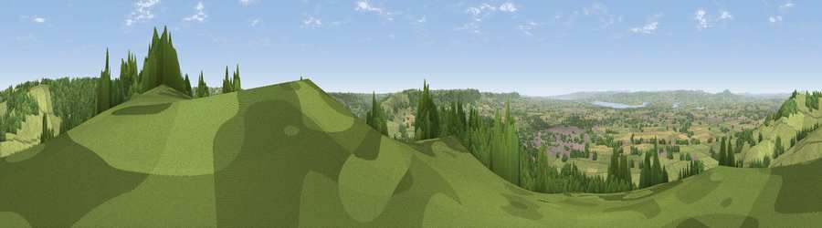

Viewpoint near Randwick
#3251 in England · top 4% of its area beats it · near RandwickThe view, rendered

A 360° render of this exact spot computed from the terrain model, tree cover and land cover — summer colours, afternoon light, calibrated against photographs of famous viewpoints. Real trees, hedges and buildings will differ in detail.
The panorama
Grey silhouette: terrain skyline in each direction (720 bearings, Earth curvature and refraction included). Dashed green: skyline with trees (+15 m) and buildings (+8 m) as obstacles. Blue strip: how far the ground is visible on each bearing.
Where the view opens
Wedge length = distance to the farthest visible ground on that bearing (vegetation-aware). Rings at 10, 25 and 50 km.
What fills the view
55% grassland · 31% woodland · 8% cropland · 6% built-up
Angular shares of the visible panorama (visual magnitude), not map area. Landscape diversity 0.47 (0–1 Shannon).
Key numbers
More beautiful places nearby
The staircase of upgrades: each row has a higher view potential than everything closer. Driving times are estimates from straight-line distance, calibrated against real road routing — check an actual route before setting out.
| Place | Direction | Drive | Score |
|---|---|---|---|
| Haresfield Beacon | N · 2 km | ~5 min | 75.7 |
| Viewpoint near Nympsfield | SSW · 6 km | ~13 min | 77.5 |
| Viewpoint near Brookthorpe | NNE · 6 km | ~13 min | 78.0 |
| Painswick Beacon | NE · 7 km | ~14 min | 79.6 |
| Viewpoint near Great Witcombe | NE · 10 km | ~20 min | 80.5 |
| Nottingham Hill | NE · 26 km | ~43 min | 80.9 |
| Chase End Hill | NNW · 29 km | ~46 min | 81.5 |
| Ragged Stone Hill | NNW · 30 km | ~47 min | 82.5 |
51.76051, -2.25568 · source: screening · position refined by local search. Computed location — check access rights before visiting.